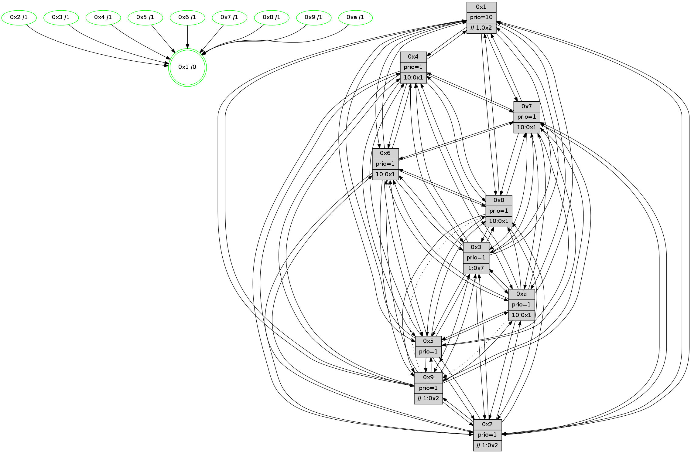

>> << IDX [start] -100 -25 -5 +0 +5 +25 +100 [890.228462934]
 Previous packets
----------------------------------------------------------------------
885.499678 beacon01(faad) #0 coord=01,02,03,04,05,06,07,0a,09,08 cycle=688.0ms assoc
-- color-indic=1 64 24 8c
885.509662 beacon02(faad) #0 coord=01,02,03,04,05,06,07,0a,09,08 cycle=688.0ms assoc 64 b7 bd
885.519660 beacon03(faad) #0 coord=01,02,03,04,05,06,07,0a,09,08 cycle=688.0ms assoc 64 cd f0
885.529661 beacon04(faad) #0 coord=01,02,03,04,05,06,07,0a,09,08 cycle=688.0ms assoc 64 ba 1a
885.539662 beacon05(faad) #0 coord=01,02,03,04,05,06,07,0a,09,08 cycle=688.0ms assoc 64 c0 57
885.549664 beacon06(faad) #0 coord=01,02,03,04,05,06,07,0a,09,08 cycle=688.0ms assoc 64 4e 80
885.559663 beacon07(faad) #0 coord=01,02,03,04,05,06,07,0a,09,08 cycle=688.0ms assoc 64 34 cd
885.569667 beacon0a(faad) #0 coord=01,02,03,04,05,06,07,0a,09,08 cycle=688.0ms assoc 64 45 c6
885.589667 beacon08(faad) #0 coord=01,02,03,04,05,06,07,0a,09,08 cycle=688.0ms assoc 64 b1 5c
885.601203 [Hello(4): seq=566 sym=5,7,6,2,3,9,8,10,1 sysInfo= stat=5:7,1,6,10/7:12,0,9,5/6:1,11,5,9/2:7,14,2,8/3:10,2,2,6/9:6,1,11,5/8:4,12,8,10/10:11,9,12,8/1:11,10,7,1]
885.604459 [Hello(10): seq=499 sym=6,2,3,8,9,5,7,4,1 sysInfo=hasWarning stat=6:13,3,6,3/2:6,2,3,3/3:13,8,1,7/8:9,13,3,0/9:4,0,7,1/5:5,5,9,11/7:9,0,7,5/4:15,5,14,6/1:15,7,8,1]
885.607148 [Hello(7): seq=566 sym=2,3,5,6,4,9,8,10,1 sysInfo=hasWarning stat=2:11,1,1,11/3:9,14,9,10/5:1,3,13,14/6:8,8,10,5/4:4,6,8,0/9:0,1,1,0/8:5,9,2,0/10:2,4,0,1/1:12,11,5,0]
885.610064 [Hello(8): seq=510 sym=5,2,3,4,9,6,1 sysInfo=hasWarning stat=5:3,8,11,11/2:1,1,5,3/3:2,2,6,10/4:7,2,5,6/9:0,1,1,0/6:4,1,3,9/1:4,8,3,0]
885.613897 [Color(8) seq=222 @0:0 prio=1 >10.@1,1.@2,1.@3,1.@5]
885.615561 [Color(7) seq=172 @0:0 prio=1 >10.@1,1.@2,1.@3,1.@4]
885.617317 [Color(1) seq=247 @0:0 prio=10 >>1.@2,1.@3,1.@4]
885.620330 [Color(10) seq=187 @0:0 prio=1 >10.@1,1.@2,1.@3,1.@5]
885.621972 [Hello(9): seq=510 sym=2,5,3,4,6,8,1 asym=7 sysInfo=hasWarning stat=2:0,10,6,1/5:0,8,2,2/3:14,13,2,10/4:7,5,2,6/6:14,15,9,7/8:6,1,11,1/1:9,2,7,1/7:7,0,10,8]
885.625004 [Color(3) seq=207 @0:0 prio=1 >1.@7]
885.629139 [Color(6) seq=209 @0:0 prio=1 >10.@1,1.@2,1.@3,1.@5]
----------------------------------------------------------------------
886.287810 beacon01(faad) #0 coord=01,02,03,04,05,06,07,0a,09,08 cycle=688.0ms assoc
-- color-indic=1 64 e0 82
886.297792 beacon02(faad) #0 coord=01,02,03,04,05,06,07,0a,09,08 cycle=688.0ms assoc 64 73 b3
886.307793 beacon03(faad) #0 coord=01,02,03,04,05,06,07,0a,09,08 cycle=688.0ms assoc 64 09 fe
886.317794 beacon04(faad) #0 coord=01,02,03,04,05,06,07,0a,09,08 cycle=688.0ms assoc 64 7e 14
886.327793 beacon05(faad) #0 coord=01,02,03,04,05,06,07,0a,09,08 cycle=688.0ms assoc 64 04 59
886.337792 beacon06(faad) #0 coord=01,02,03,04,05,06,07,0a,09,08 cycle=688.0ms assoc 64 8a 8e
886.347794 beacon07(faad) #0 coord=01,02,03,04,05,06,07,0a,09,08 cycle=688.0ms assoc 64 f0 c3
886.357797 beacon0a(faad) #0 coord=01,02,03,04,05,06,07,0a,09,08 cycle=688.0ms assoc 64 81 c8
886.377798 beacon08(faad) #0 coord=01,02,03,04,05,06,07,0a,09,08 cycle=688.0ms assoc 64 75 52
886.389038 [Hello(3): seq=567 sym=1,7,6,2,4,8,9,10,5 sysInfo= stat=1:3,13,10,0/7:15,6,3,6/6:13,0,5,1/2:9,10,5,9/4:3,13,11,5/8:9,12,3,0/9:2,10,5,9/10:2,8,2,1/5:2,9,1,10]
886.392716 [Hello(1): seq=476 sym=4,2,9,5,10,3,8,6,7 sysInfo=coloring-mode-on,ColoringModeRequestCalled stat=4:13,6,9,0/2:3,1,4,10/9:9,15,6,3/5:14,14,13,4/10:6,12,3,1/3:9,0,2,1/8:10,14,3,0/6:5,5,1,9/7:4,6,8,11]
886.395218 [Hello(5): seq=567 sym=7,6,4,3,1,9,8,10,2 sysInfo=hasWarning stat=7:2,12,11,7/6:15,5,7,9/4:13,7,9,5/3:0,9,0,8/1:5,8,6,1/9:8,8,6,2/8:12,5,3,7/10:11,12,0,3/2:3,7,1,0]
886.406905 [Color(4) seq=185 @0:0 prio=1 >10.@1,1.@2,1.@3,1.@7]
----------------------------------------------------------------------
887.075941 beacon01(faad) #0 coord=01,02,03,04,05,06,07,0a,09,08 cycle=688.0ms assoc
-- color-indic=1 64 5c 87
887.085923 beacon02(faad) #0 coord=01,02,03,04,05,06,07,0a,09,08 cycle=688.0ms assoc 64 cf b6
887.095924 beacon03(faad) #0 coord=01,02,03,04,05,06,07,0a,09,08 cycle=688.0ms assoc 64 b5 fb
887.105923 beacon04(faad) #0 coord=01,02,03,04,05,06,07,0a,09,08 cycle=688.0ms assoc 64 c2 11
887.115924 beacon05(faad) #0 coord=01,02,03,04,05,06,07,0a,09,08 cycle=688.0ms assoc 64 b8 5c
887.125924 beacon06(faad) #0 coord=01,02,03,04,05,06,07,0a,09,08 cycle=688.0ms assoc 64 36 8b
887.135924 beacon07(faad) #0 coord=01,02,03,04,05,06,07,0a,09,08 cycle=688.0ms assoc 64 4c c6
887.145929 beacon0a(faad) #0 coord=01,02,03,04,05,06,07,0a,09,08 cycle=688.0ms assoc 64 3d cd
887.155930 beacon09(faad) #0 coord=01,02,03,04,05,06,07,0a,09,08 cycle=688.0ms assoc 64 b3 1a
887.165930 beacon08(faad) #0 coord=01,02,03,04,05,06,07,0a,09,08 cycle=688.0ms assoc 64 c9 57
887.179377 [Hello(4): seq=567 sym=5,7,6,2,3,9,8,10,1 sysInfo= stat=5:7,1,6,10/7:13,1,9,5/6:1,12,5,9/2:7,14,2,8/3:11,2,2,6/9:7,2,11,5/8:5,13,8,10/10:12,10,12,8/1:11,11,7,1]
887.182417 [Color(1) seq=248 @0:0 prio=10 >>1.@2,1.@3,1.@4]
887.184151 [Hello(8): seq=511 sym=5,2,3,4,9,6,1 sysInfo=hasWarning stat=5:4,8,11,11/2:1,2,5,3/3:3,3,6,10/4:8,3,5,6/9:1,1,1,0/6:4,2,3,9/1:5,9,3,0]
887.187296 [Color(3) seq=208 @0:0 prio=1 >1.@7]
887.189866 [Hello(10): seq=500 sym=6,2,3,8,9,5,7,4,1 sysInfo=hasWarning stat=6:14,4,6,3/2:6,3,3,3/3:14,9,1,7/8:9,13,3,0/9:5,0,7,1/5:6,5,9,11/7:9,0,7,5/4:0,6,14,6/1:0,7,8,1]
887.193310 [Color(10) seq=188 @0:0 prio=1 >10.@1,1.@2,1.@3,1.@5]
887.195913 [Color(9) seq=216 @0:0 prio=1 >>1.@2,1.@3,1.@4]
887.198174 [Color(8) seq=223 @0:0 prio=1 >10.@1,1.@2,1.@3,1.@5]
887.203617 [Color(6) seq=210 @0:0 prio=1 >10.@1,1.@2,1.@3,1.@5]
887.205670 [Hello(7): seq=567 sym=2,3,5,6,4,9,8,10,1 sysInfo=hasWarning stat=2:11,2,1,11/3:10,15,9,10/5:2,3,13,14/6:9,9,10,5/4:5,7,8,0/9:1,1,1,0/8:5,9,2,0/10:2,5,0,1/1:13,12,5,0]
887.208478 [Color(7) seq=173 @0:0 prio=1 >10.@1,1.@2,1.@3,1.@4]
----------------------------------------------------------------------
887.864072 beacon01(faad) #0 coord=01,02,03,04,05,06,07,0a,09,08 cycle=688.0ms assoc
-- color-indic=1 64 88 b2
887.874055 beacon02(faad) #0 coord=01,02,03,04,05,06,07,0a,09,08 cycle=688.0ms assoc 64 1b 83
887.884056 beacon03(faad) #0 coord=01,02,03,04,05,06,07,0a,09,08 cycle=688.0ms assoc 64 61 ce
887.894054 beacon04(faad) #0 coord=01,02,03,04,05,06,07,0a,09,08 cycle=688.0ms assoc 64 16 24
887.904055 beacon05(faad) #0 coord=01,02,03,04,05,06,07,0a,09,08 cycle=688.0ms assoc 64 6c 69
887.914054 beacon06(faad) #0 coord=01,02,03,04,05,06,07,0a,09,08 cycle=688.0ms assoc 64 e2 be
887.924054 beacon07(faad) #0 coord=01,02,03,04,05,06,07,0a,09,08 cycle=688.0ms assoc 64 98 f3
887.934061 beacon0a(faad) #0 coord=01,02,03,04,05,06,07,0a,09,08 cycle=688.0ms assoc 64 e9 f8
887.954061 beacon08(faad) #0 coord=01,02,03,04,05,06,07,0a,09,08 cycle=688.0ms assoc 64 1d 62
887.973263 [Color(4) seq=186 @0:0 prio=1 >10.@1,1.@2,1.@3,1.@7]
887.976855 [Color(2) seq=213 @0:0 prio=1 >>1.@2,1.@3,1.@4]
887.978715 [Color(5) seq=221 @0:0 prio=1]
----------------------------------------------------------------------
888.652203 beacon01(faad) #0 coord=01,02,03,04,05,06,07,0a,09,08 cycle=688.0ms assoc
-- color-indic=1 64 34 b7
888.662184 beacon02(faad) #0 coord=01,02,03,04,05,06,07,0a,09,08 cycle=688.0ms assoc 64 a7 86
888.672185 beacon03(faad) #0 coord=01,02,03,04,05,06,07,0a,09,08 cycle=688.0ms assoc 64 dd cb
888.682186 beacon04(faad) #0 coord=01,02,03,04,05,06,07,0a,09,08 cycle=688.0ms assoc 64 aa 21
888.692186 beacon05(faad) #0 coord=01,02,03,04,05,06,07,0a,09,08 cycle=688.0ms assoc 64 d0 6c
888.702187 beacon06(faad) #0 coord=01,02,03,04,05,06,07,0a,09,08 cycle=688.0ms assoc 64 5e bb
888.712186 beacon07(faad) #0 coord=01,02,03,04,05,06,07,0a,09,08 cycle=688.0ms assoc 64 24 f6
888.722191 beacon0a(faad) #0 coord=01,02,03,04,05,06,07,0a,09,08 cycle=688.0ms assoc 64 55 fd
888.742192 beacon08(faad) #0 coord=01,02,03,04,05,06,07,0a,09,08 cycle=688.0ms assoc 64 a1 67
888.754445 [STC(2)->1 #0.110 tree-change,inconsistent-stability,stable,to-color d=1]
888.756563 [Hello(7): seq=568 sym=2,3,5,6,4,9,8,10,1 sysInfo=hasWarning stat=2:12,3,1,11/3:10,15,9,10/5:2,3,13,14/6:10,9,10,5/4:6,8,8,0/9:1,1,1,0/8:5,9,2,0/10:2,5,0,1/1:13,12,5,0]
888.759301 [Hello(4): seq=568 sym=5,7,6,2,3,9,8,10,1 sysInfo= stat=5:7,2,6,10/7:14,2,9,5/6:2,13,5,9/2:7,15,2,8/3:11,2,2,6/9:8,3,11,5/8:6,14,8,10/10:12,11,12,8/1:11,12,7,1]
888.761756 [Color(7) seq=174 @0:0 prio=1 >10.@1,1.@2,1.@3,1.@4]
888.763577 [Hello(9): seq=512 sym=2,5,3,4,7,6,10,1 asym=8 sysInfo=hasWarning stat=2:1,11,6,1/5:1,10,2,2/3:15,13,2,10/4:9,7,2,6/7:8,1,10,8/6:14,1,9,7/10:1,0,0,0/1:10,2,7,1/8:6,2,11,1]
888.766472 [Color(9) seq=217 @0:0 prio=1 >>1.@2,1.@3,1.@4]
888.768555 [Color(1) seq=249 @0:0 prio=10 >>1.@2,1.@3,1.@4]
888.770640 [Color(6) seq=211 @0:0 prio=1 >10.@1,1.@2,1.@3,1.@5]
888.772612 [Hello(10): seq=501 sym=6,2,3,8,5,7,4,1 asym=9 sysInfo=hasWarning stat=6:15,5,6,3/2:6,4,3,3/3:14,9,1,7/8:9,14,3,0/5:6,5,9,11/7:10,1,7,5/4:1,7,14,6/1:0,7,9,1/9:5,1,7,1]
888.775279 [Hello(8): seq=512 sym=5,2,3,4,9,6,7,1 sysInfo=hasWarning stat=5:4,9,11,11/2:1,3,5,3/3:3,3,6,10/4:9,4,5,6/9:1,1,1,0/6:4,3,3,9/7:0,1,0,0/1:5,9,3,0]
888.777746 [STC(3)->1 #0.110 tree-change,inconsistent-stability,stable,to-color d=1]
888.779394 [Color(8) seq=224 @0:0 prio=1 >10.@1,1.@2,1.@3,1.@5]
888.785588 [TreeStatus(3)-.->1 #0.110 tree-change,inconsistent-stability,stable child=1]
888.787609 [STC(10)->1 #0.110 tree-change,inconsistent-stability,stable,to-color d=1]
888.789459 [Color(3) seq=209 @0:0 prio=1 >1.@7]
888.791160 [Color(10) seq=189 @0:0 prio=1 >10.@1,1.@2,1.@3,1.@5]
----------------------------------------------------------------------
889.440334 beacon01(faad) #0 coord=01,02,03,04,05,06,07,0a,09,08 cycle=688.0ms assoc
-- color-indic=1 64 f0 b9
889.450316 beacon02(faad) #0 coord=01,02,03,04,05,06,07,0a,09,08 cycle=688.0ms assoc 64 63 88
889.460316 beacon03(faad) #0 coord=01,02,03,04,05,06,07,0a,09,08 cycle=688.0ms assoc 64 19 c5
889.470317 beacon04(faad) #0 coord=01,02,03,04,05,06,07,0a,09,08 cycle=688.0ms assoc 64 6e 2f
889.480316 beacon05(faad) #0 coord=01,02,03,04,05,06,07,0a,09,08 cycle=688.0ms assoc 64 14 62
889.490317 beacon06(faad) #0 coord=01,02,03,04,05,06,07,0a,09,08 cycle=688.0ms assoc 64 9a b5
889.500319 beacon07(faad) #0 coord=01,02,03,04,05,06,07,0a,09,08 cycle=688.0ms assoc 64 e0 f8
889.510321 beacon0a(faad) #0 coord=01,02,03,04,05,06,07,0a,09,08 cycle=688.0ms assoc 64 91 f3
889.530323 beacon08(faad) #0 coord=01,02,03,04,05,06,07,0a,09,08 cycle=688.0ms assoc 64 65 69
889.541899 [Hello(1): seq=478 sym=4,2,9,5,10,3,8,6,7 sysInfo=coloring-mode-on,ColoringModeRequestCalled stat=4:14,7,9,0/2:3,1,5,10/9:9,0,6,3/5:15,14,13,4/10:8,14,4,1/3:9,2,3,2/8:12,0,3,0/6:6,7,1,9/7:5,7,8,11]
889.545207 [Hello(3): seq=569 sym=1,7,6,2,4,8,9,10,5 sysInfo= stat=1:4,13,11,0/7:1,7,3,6/6:13,1,5,1/2:10,12,6,9/4:4,15,11,5/8:9,13,3,0/9:2,11,5,9/10:3,10,2,1/5:3,9,1,10]
889.547764 [Hello(6): seq=569 sym=2,3,5,4,7,9,8,10,1 sysInfo= stat=2:6,0,1,7/3:3,1,8,9/5:1,13,9,12/4:0,10,1,0/7:13,14,5,4/9:14,9,8,2/8:10,0,2,0/10:13,14,14,9/1:8,13,1,1]
889.550963 [Color(4) seq=187 @0:0 prio=1 >10.@1,1.@2,1.@3,1.@7]
889.555331 [Hello(2): seq=565 sym=4,5,7,6,3,9,8,10,1 sysInfo=hasWarning stat=4:8,6,0,4/5:8,14,5,1/7:6,14,11,8/6:14,12,5,7/3:1,3,3,5/9:11,7,4,2/8:14,11,1,7/10:10,1,4,8/1:2,8,4,1]
889.563826 [Color(5) seq=222 @0:0 prio=1]